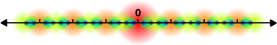
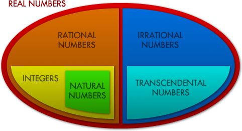
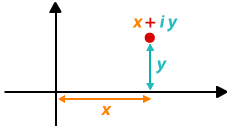
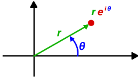

The Integers
Babylonian numerals: some
of the first examples of
integers in history.
“God made the integers; all else is the work of man.”This is a famous quote by the German mathematician Leopold Kronecker (1823 – 1891). Of course he was wrong: underlying nature are not discrete integers but continuous functions. Yet integers are some of the simplest, most intuitive and most beautiful objects in mathematics. They are also the first part of mathematics we learn at schools.
The natural numbers are 1, 2, 3, 4, … There are infinitely many natural numbers: we can simply keep adding 1 to the previous number to get more and more. Natural numbers have many beautiful properties, and these are investigated in an area of mathematics called Number theory.
We want continue forever into one direction, but what if we want to go the other way? What is less than 1? Of course there is “nothing”, but can “nothing” really be a number, i.e. “something”? Many ancient cultures, including the Greeks, were rather unsure about the concept of “nothingness”. Others already used the symbol for nothing, 0 = zero, as placeholder. In “10” for example, the symbol 0 is used as a placeholder.
Once we have accepted that “nothing” can be treated just like a number, it is possible to go even further. Clearly nothing can be “more nothing” than zero, but the concept does appear in daily life, such as when you spend more money you have. Your account balance is negative, it is less than 0. Unfortunately we can’t see these negative numbers, but we can do calculations with them. For example,
5 – 12 = –7,
because 5 + 7 = 12. Together, the positive and negative numbers form the integers:

To make it easier to refer to these groups of numbers, mathematicians have invented a couple of special symbols:  for the natural numbers and
for the natural numbers and  for the integers (from the German “Zahl” meaning number).
for the integers (from the German “Zahl” meaning number).
Rational Numbers
The integers form a pretty comprehensive set of numbers. We can add them, subtract them and multiply them. Only when we want to divide two integers it doesn’t always work.
The ratio 10 / 2 = 5 is simple. 8 / 2 = 4 is also simple. But 9 / 2 is not quite as obvious. It has to be somewhere in between 4 and 5 – but unfortunately there aren’t any integers between 4 and 5.
Therefore 9/2 must belong to a new group of numbers. These are called rational numbers and represented by the symbol  (for quotients). All fractions or ratios, such as 376/290, –170/657 or 1/499, are rational numbers.
(for quotients). All fractions or ratios, such as 376/290, –170/657 or 1/499, are rational numbers.
Fractions usually have many representations. For example 1/2 = 2/4 = 3/6 and so on. In addition they can be written as decimal numbers such as 1/2 = 0.5 or 1/3 = 0.3333333… The decimal expansion of rational numbers is either finite (like 0.73), or it eventually consists of repeating blocks of digits (like 0.73454545…).
Real Numbers
Rational numbers are everywhere along the number line. However close you look, there will be millions and millions more. Surely there is no space left for any other numbers – but unfortunately this assumption is wrong.
Let us think about the equation x2 = 2. To solve it, we need to find a number x which, when squared, is 2. We could start as follows:
12 = 1 and 22 = 4
so x has to be somewhere between 1 and 2
1.42 = 1.96 and 1.52 = 2.25
so x has to be somewhere between 1.4 and 1.5
1.412 = 1.9881 and 1.422 = 2.0164
so x has to be somewhere between 1.41 and 1.42
continue like this until we find a number x which is exactly 2 when squared…
Unfortunately we would soon discover that there don’t seem to be any rational numbers which, when squared, are exactly 2. Let us call x = √2 (the square root of 2). If we can’t find this new number among the rational numbers it must belong to some group of numbers we have not discovered yet. Let us call these new numbers the irrational numbers.
Irrational numbers are those numbers which can’t be written as fractions. But how do we know that irrational numbers exist at all and that √2 is one of them? Maybe we just need to look harder to find a fraction which, when squared, is 2?
Below is a proof to show that √2 is irrational. We shall first assume that √2 is rational and can be written as a fraction. Then we do a few logical operations and deduce something that can’t possibly be right: a contradiction. If all our steps were valid, this means that the assumption we started with, that √2 is rational, must be wrong. And then we know that√2 is indeed irrational.
Let us assume that √2 were rational. Let us write √2 = mn where m and n are some integers. Let us also assume that this fraction is in lowest terms (it can’t be simplified any further) which means that m and n have to factor in common.
√2 = mn
Let us square both sides and the multiply both sides by n2:
2 = m2n2
2 × n2 = m2
We see that m2 is even (multiple of 2) and so m also has to be even (an odd number squared is always an odd number). Since m is even we can write m = 2 × a for some other integer a.
2 × n2 = (2 × a)2
2 × n2 = 4 × a2
n2 = 2 × a2
And using the same reasoning as for m above, we can now deduce that n is also even.
Both m and n are even, so the fraction m/n can be simplified (just divide numerator and denominator by 2). Therefore m/n is not in lowest terms. Remember that we said at the beginning that the fraction m/n is in lowest terms – therefore we have a contradiction.
This means that our initial assumption that √2 is rational was wrong. √2 is irrational.
Now we know that these irrational numbers do exist, and we even have one example: √2. It turns out that most other roots are also irrational. The constants π and e are also irrational.
Just like rational numbers have repeating decimal expansions (or finite ones), the irrational numbers have no repeating pattern. Together, the irrational and rational numbers are called the real numbers which are often written as . These are all numbers we can see along the number line.
Infinity
There are infinitely many natural numbers: they always get bigger and bigger. There are also infinitely many integers: these not only get bigger but also get smaller towards negative infinity.
There are also infinitely many rational numbers: towards infinity and negative infinity, but also as you zoom into the number line. There are infinitely many rational numbers between 0 and 1, or between 2 and 2.1. There are infinitely many rational numbers in every interval you choose, no matter how small it is. Mathematicians say that the rational numbers are dense. It is difficult to believe that there is space in between the rational for any real numbers. But there has to be – because we know examples like √2 or Pi.
In the following chapter you will look at Infinity and show that the infinities of integers and rational numbers are of the same order. On the other hand, the number of real numbers is infinitely bigger than that: almost all numbers are real and only very few special numbers are rational or even integers. Rational numbers are everywhere along the number line, but they take up hardly any space…

Rational numbers represented by circles: the size depends on their denominator.
The circles go on forever, getting smaller and smaller.
Here is how you should think about this: one single point has no width and thus takes up no space on the number line. The integers are infinitely many points, but the sum is not enough. The rational numbers are everywhere along the number line, but they still consist of individual points and hence take up no space. The real numbers don’t consist of individual points but of (infinitely small) continuous line segments: and there is infinitely more space along line segments than there is in single points!
As a mathematician you have to be much more careful: infinitely many points of size 0 may well make up space bigger than 0. Therefore there is a dedicated area of mathematics thinking about these problems: Measure theory. For example, rather than saying the “rational numbers take up 0 space”, measure theorists say that the Lebesgue measure of the set of rational numbers is 0. The Lebesgue measure is a particular way of measuring the size of sets.
Measure theory makes another important appearance in mathematics: probability. In probability you often have a set of “events” (possible outcomes) and the size of these sets tells you the probability. In some cases you need Measure theory to accurately find the size of these probability sets.
Transcendental Numbers
Irrational numbers are those which can’t be written as a fraction (which don’t have a repeating decimal expansion). But they can arise differently: √2 for example was the solution to the quadratic equation x2 = 2. But not all irrational numbers are the solution of such polynomial equations with rational coefficients. Those which aren’t are called Transcendental Numbers. As the name suggests they are somewhat beyond ordinary mathematics: they don’t occur naturally in algebra and are often the limits of sequences. It can be extremely hard to prove that a number is transcendental, but we know that Pi and e are both transcendental.
The name transcendental comes from the mathematician Gottfried Wilhelm Leibniz (1646 – 1716), but it wasn’t until 1844 that Joseph Liouville (1809 – 1882) proved that these numbers actually exist and until 1882 that Ferdinand von Lindemann proved that Pi is transcendental.
Having discovered so many different kinds of numbers we should briefly pause and summarise how they are linked:

Imaginary and Complex Numbers
What we have done so far is start with a certain number set, find an equation with a solution which is not part of that number set, and then define a new number set which does include the solution. And we can use this method again: let’s think about the equation x2 = –1. If x = 1 then x2 = 1, but if x = –1 then x2 = 1 also. Remember that the square of real numbers is never less than 0, so the value of x that solves x2 = –1 can’t be real. We call it an imaginary number and write i = √–1. Any other imaginary number is a multiple of i, for example 2i or –0.5 i.


If we combine real and imaginary numbers, like in 2 + 3i, we get complex numbers. These are best represented in a coordinate system were the x-axis shows the real part and the y-axis shows the imaginary part of the complex number. This is called the Complex plane or Argand diagram, named after the mathematician Jean-Robert Argand (1768 – 1822).
We can represent complex numbers using the cartesian (x, y) coordinates, or using an angle and the distance from a fixed point (the origin) towards the complex number we are trying to represent:
|  |  |
Cartesian Coordinates: x + i y | Polar Coordinates: r eiθ |
The polar equation seems rather random: how did the constant e appear, and how can we multiply an angle by i? These questions can be answered using trigonometry. The angle θ above has to be in radians, not degrees, which means that 180° = π radians. For θ = π and r = 1, we go exactly half way around the circle and arrive at –1. Therefore
1 × e π × i = –1, or
e π × i + 1 = 0.

This equation has gained particular fame in popular mathematics because it involves all the fundamental constants in mathematics: 0, 1, e, π and i.
The name “imaginary” is very misleading: these numbers are not a concept made up by mathematicians, they appear everywhere in nature. Without imaginary numbers it would be almost impossible to explain waves, the motion of fluids, or Quantum mechanics.